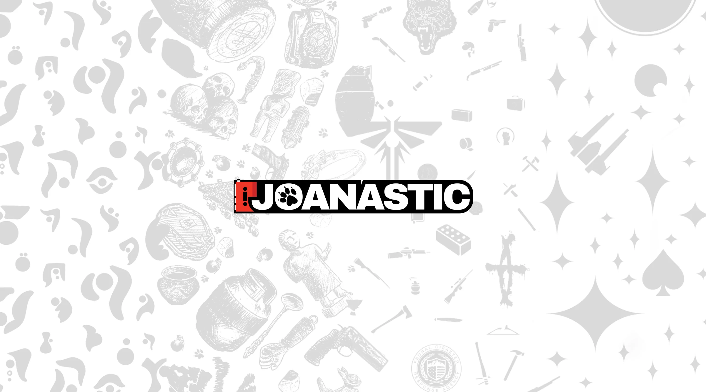
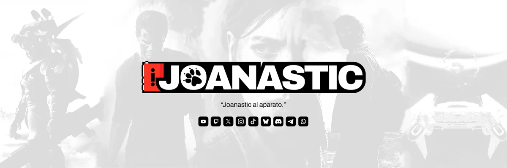
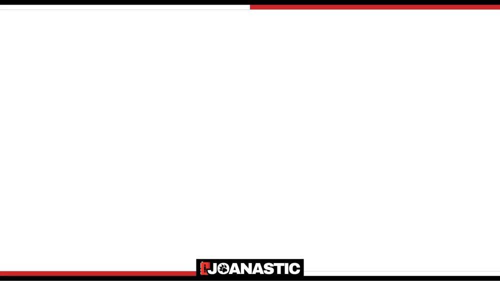
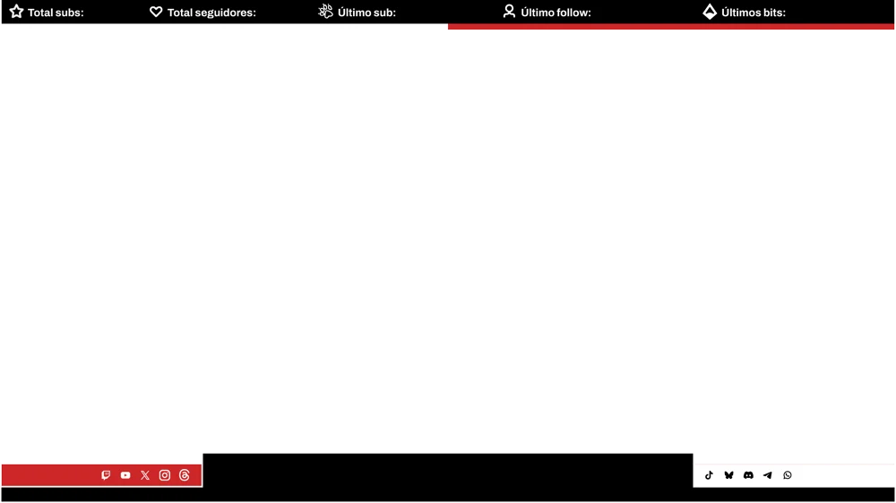
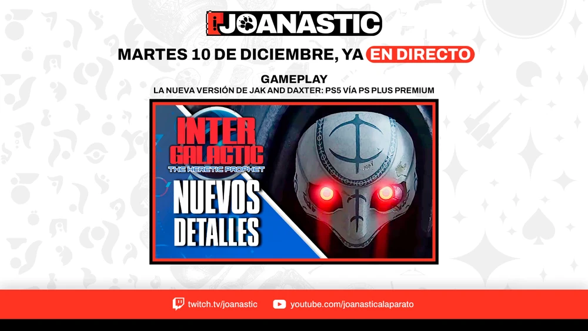

A complete visual rebrand for a Spanish content creator whose entire identity was, by his own admission, too close to the studio he covered. The challenge: build something uniquely his — without losing the essence of what made his channel work.
Joanastic is a Spanish content creator specialising in the Naughty Dog universe — sharing news, analysis, and criticism around franchises like The Last of Us and Uncharted. His previous visual identity was virtually identical to Naughty Dog's own branding, which made it difficult to establish him as an independent creative voice.
The core of the rebrand was creating "El Aparato" — an original icon representing a Walkman, directly referencing Joanastic's signature greeting: "...Joanastic al aparato." The icon is recognisable on its own, carries a strong personality, and nods to the nostalgic, story-driven world of Naughty Dog without reproducing it.
I maintained the colour palette and typographic feel of the original identity to preserve brand continuity and audience recognition, while replacing everything that was directly borrowed. The result was a complete visual system — logo, stream overlays, social media assets, avatars, and brand guidelines — that gave Joanastic a distinct identity he could own.



